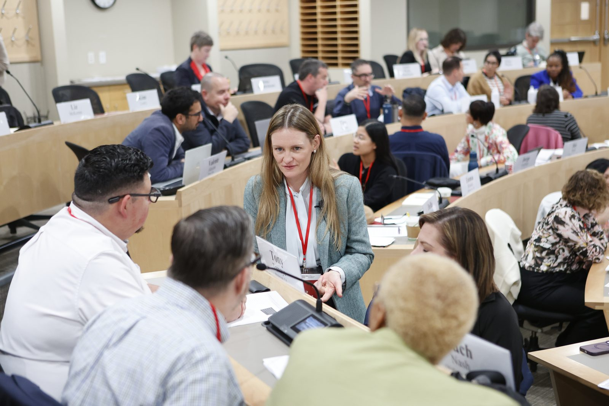
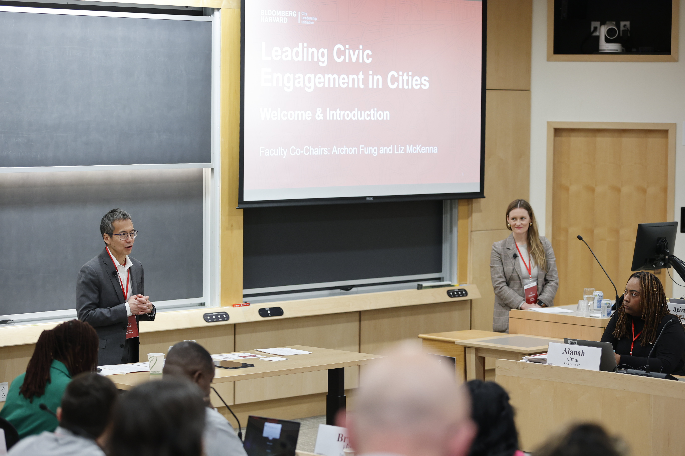
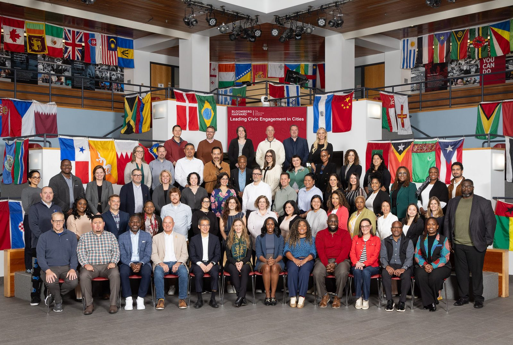

Four courses at the Kennedy School plus an executive education program with city leaders. Built for students who want to study democracy and practice it. Three of the running courses have won Dean's Teaching Awards.
Teaching democracy at a policy school is a specific responsibility. Many students will soon be making decisions that shape whether other people have real voice, in campaigns, in agencies, in philanthropy, in movements.
Our courses take that seriously. We read rigorously, we fight about the readings, and we spend time on what civic work actually looks like on a Tuesday afternoon in a church basement.
The other non-negotiable: practitioners belong in the room. Every course has movement leaders, organizers, and former campaign staff as co-teachers and guests, not as decoration.
The HKS qualitative methods core. Interviews, fieldwork, case-based analysis, coding, and the design of small-N studies for policy and political analysis.
2024 & 2025 Dean's Teaching Awards

A course on social movements as both subject and practice. Students read the empirical and theoretical literature on movement strategy, mobilization, and organization, and design a strategic chart for a real campaign.
2024 Dean's Teaching Award
A practicum in research design for people who run organizations. Students bring a real question and leave with a mixed-methods plan that combines administrative data, field observation, surveys, and small experiments.
2023 & 2024 Dean's Teaching Awards
What happens to civic life when machines start doing the things organizing does, making meetings, asking for time, building relationships? A new course on agency, automation, and the institutions that depend on human judgment.
A residential program for mayors, deputy mayors, and senior city staff working on civic engagement. Co-chaired with Archon Fung, convened biennially at the Harvard Kennedy School. Faculty and practitioners across organizing, public administration, and digital democracy.


Ohio organizers experiment with relational contacts. The OOC's 2018–2022 arc, in classroom-ready form. Written by Pam Varley with Joy Cushman, Prentiss Haney, and Molly Shack.
Final assignment from a recent cohort: a scrolling site of focus-group findings on student AI use at HKS.
A teaching case on faith-based community organizing, with Hahrie Han.
Dorothy Manevich (Harvard FAS Government, 2025). Jessica Van Meir (HKS, G5).
Projects with the AFL-CIO (Sunshine Award), San Francisco Public Utilities Commission, the Southern Poverty Law Center (William Julius Wilson Research Award), MOVE Missouri, LUCHA (Sunshine Award), and an AI digital-democracy tool.